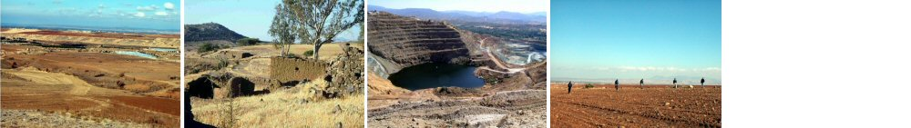

All: Department of Archaeology, University of Glasgow.
Michael Given m.given@archaeology.arts.gla.ac.uk, Hugh Corley h.corley@archaeology.arts.gla.ac.uk, Luke Sollars luke-62@bigfoot.com
One of the major challenges facing intensive surface survey, even after some 30 years of development, is how to interpret surface artefact scatters in terms of past human activities and relationships. How can we combine the wealth of systematically collected survey data with the interpretative sophistication of contemporary landscape theory? This study uses web-based GIS and database technologies to provide a complete landscape data set and a fully integrated interpretative text carefully grounded in current landscape theory.

The material comes from the Troodos Archaeological and Environmental Survey Project, which carried out intensive survey in the northern foothills of the Troodos Mountains in central Cyprus between 2000 and 2004. This survey covered all periods from the Neolithic to the present day, a wide range of topographical and environmental contexts, and a broad spectrum of disciplinary and interdisciplinary expertise. In this study we focus on some core themes, particularly the relationship between farming and mining, the control of production, and the spatial differentiation of human activity across the landscape. By interpreting the material traces of routine practices such as labour and subsistence, we attempt to reconstruct social landscapes of the past.
Go to article Table of Contents
© Internet Archaeology/Authors
URL: http://intarch.ac.uk/journal/issue20/4/index.html
Last updated: Wednesday 18 July 2007